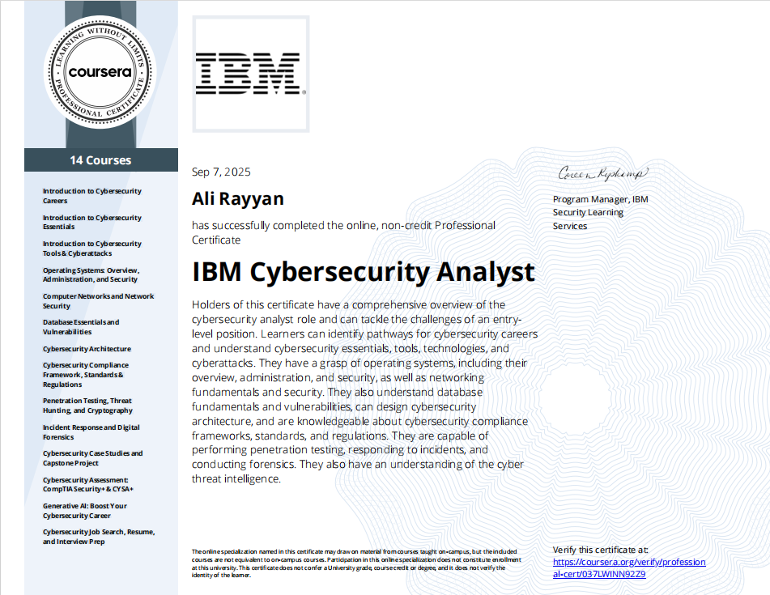
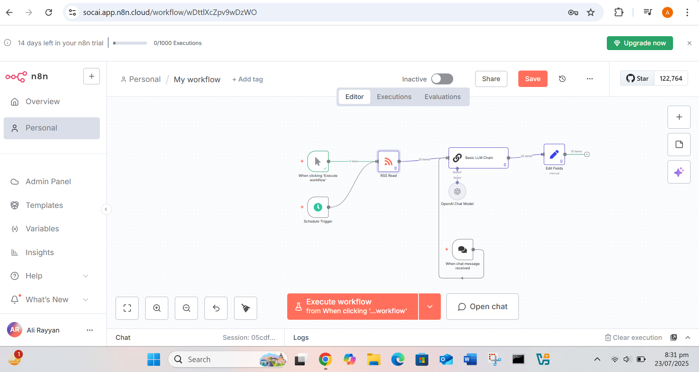
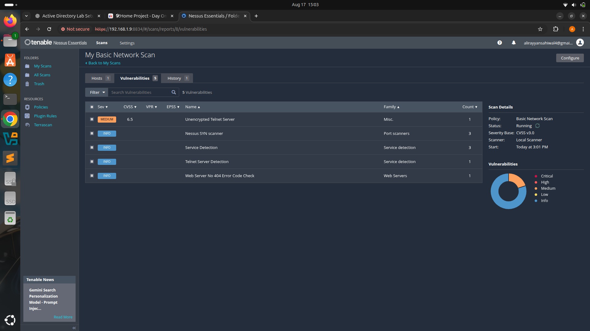
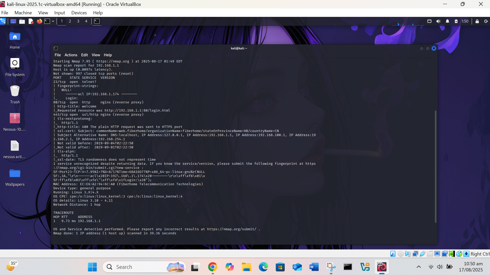
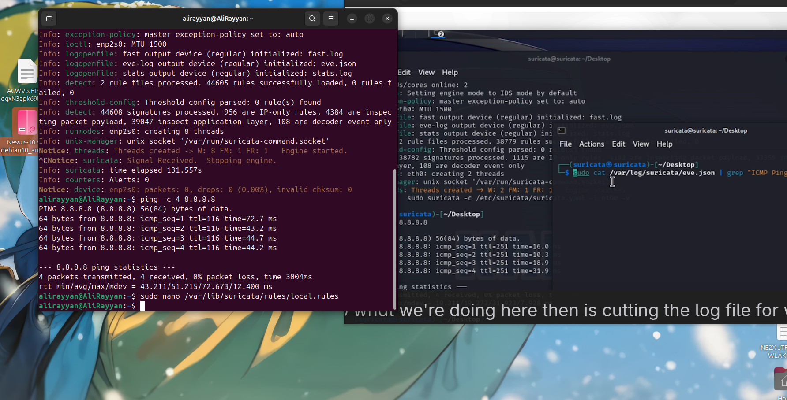
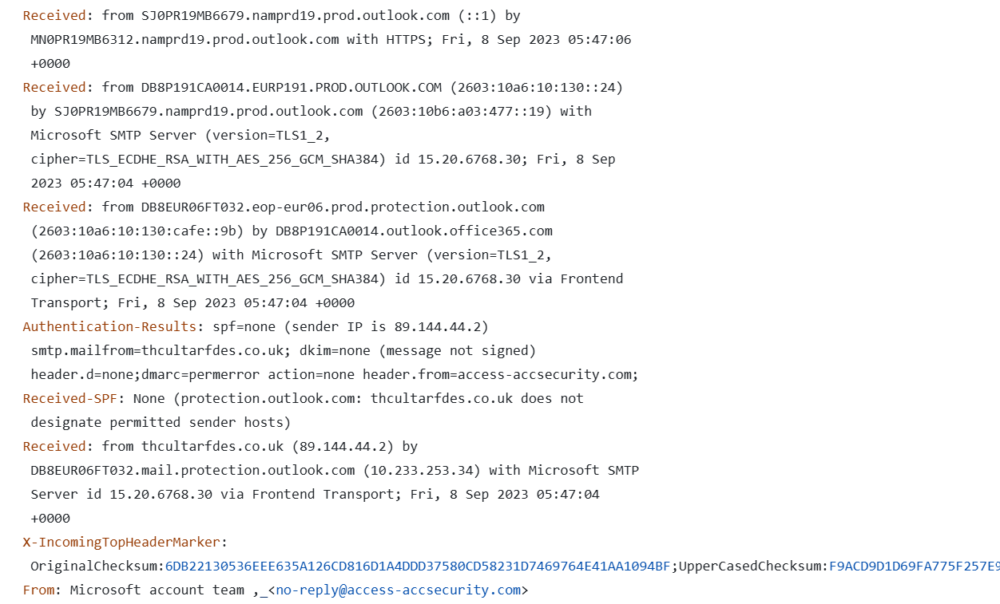
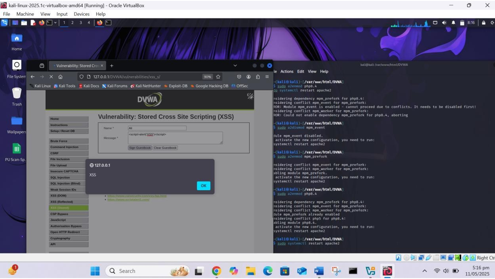
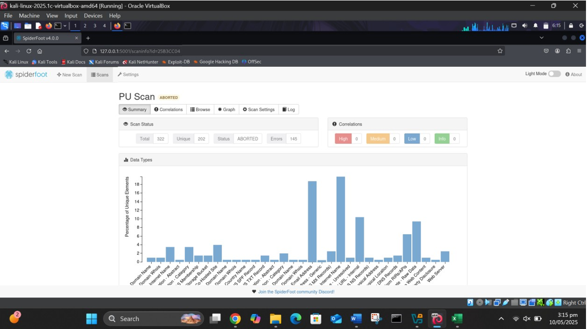

I'm Ali Rayyan
Cybersecurity Enthusiast
I'm a passionate cybersecurity learner and analyst who loves understanding how systems behave — from network traffic and logs to real-time threats and attack patterns. With hands-on experience in tools like Microsoft Sentinel, Elastic SIEM, Nmap, Wireshark, and automation platforms, I focus on delivering clear, accurate, and reliable cyber-related work. I enjoy solving complex security challenges, analyzing attacks, and helping clients strengthen their systems. Whether it's security monitoring, threat detection, incident reporting, SIEM rules, cybersecurity assignments, or automation workflows, I ensure high-quality, detail-oriented results that combine technical expertise with analytical thinking..

Experience
About Me
I'm a cybersecurity enthusiast and SOC analyst-in-training with a strong foundation in web development and security tools. I enjoy solving technical problems, analyzing threats, and creating efficient security solutions using tools like Microsoft Sentinel, Elastic SIEM, Nmap, and Wireshark.
I combine my development background with cybersecurity skills to deliver clear, reliable, and high-quality work — from cyber assignments to automation, monitoring, and threat analysis..
I specialize in creating responsive, user-friendly websites and web applications using modern frameworks and libraries. My approach combines technical expertise with creative problem-solving to deliver solutions that not only look great but also perform exceptionally.
When I'm not coding, you can find me exploring new technologies, contributing to open-source projects, or sharing knowledge with the developer community through my blog and social media.
Education
Software Engineering
Location
Pakistan
Experience
1+ Years in Cybersecurity
Skills & Expertise
Frontend Development
Backend Development
Database Management
DevOps & Tools
Cybersecurity & SOC Tools
Security Automation & Scripting
What I Do
Cybersecurity Assignments & Projects
I help students and professionals complete cybersecurity-related assignments, labs, and projects with clear explanations, accurate results, and proper documentation.
SOC Analysis & Threat Detection
I analyze logs, alerts, and security events using SIEM tools to identify suspicious activity and provide detailed incident insights.
Security Automation
I build custom automations to streamline cybersecurity workflows using tools like Tines and n8n, helping teams reduce manual work
Web Security Testing
I perform basic web app vulnerability scanning and provide clear reports with remediation guidance for better security hygiene.
Network Analysis & Monitoring
I analyze network traffic using tools like Wireshark and Nmap, helping you understand vulnerabilities, open ports, and misconfigurations..
Web Development (Support for Security Projects)
I build small, secure web applications needed for cyber labs, automation workflows, or security demonstrations.
Featured Projects

AI Threat Feed Automation System
A fully automated threat intelligence pipeline built with n8n and GPT that collects new CVEs, analyzes severity, and generates human-readable summaries for SOC teams. The workflow fetches RSS feeds, enriches data using AI, and outputs structured Markdown reports.

Tines Phishing Email Analysis Automation
A real SOC-grade automation workflow that parses .eml files, analyzes phishing indicators using Sublime Security, enriches metadata, and sends analyst-ready notifications. Integrates email telemetry with Elastic SIEM for deeper correlation.

Nessus Vulnerability Scanning Project
Performed vulnerability assessment using Nessus Essentials on multiple systems. The project includes full scan configuration, analysis of high-risk findings, and structured remediation reporting.

Nmap Network Scanning & Enumeration
Conducted advanced scanning including host discovery, port scanning, service version detection, OS fingerprinting, and NSE vulnerability scripts. Provided actionable insights based on scan results.

Suricata Intrusion Detection System
Configured Suricata IDS for real-time network monitoring, generated alerts on ICMP and suspicious traffic, and analyzed logs (eve.json & fast.log) to understand attacker behavior.

Phishing Email Analysis
Analyzed payloads, headers, and social-engineering patterns to understand attacker techniques.
Featured Assignments

OSINT, Recon & Vulnerability Analysis
This assignment focused on performing full passive and active reconnaissance on a target .edu.pk domain using multiple OSINT and scanning tools. I used SpiderFoot for passive recon to discover domain details, subdomains, SSL certificates, and metadata. Then, I conducted a Shodan Hunt on exposed Pakistani services, analyzing open ports, running services, and potential vulnerabilities. Next, I performed a combined Shodan + Nmap + Nikto analysis on a target IP to validate service information, detect outdated software, and match findings to relevant CVEs. The assignment also included building a multi-stage recon methodology (WHOIS → DNS → Subdomains → Banner Grabbing → Vulnerability Scanning) and explaining tool chaining such as Maltego → Shodan → Recon-ng for automated OSINT workflows. I also created a custom Recon-ng module to extract SPF, DKIM, and DMARC records and explained how attackers exploit misconfigured email authentication. Finally, I automated the entire recon pipeline by writing a Bash script that performs WHOIS, DNS lookup, subdomain enumeration, Nmap scanning, and exports results into a polished HTML report.

Web Security, Scanning & Enumeration
This assignment involved performing multiple cybersecurity tasks focused on web security, scanning, enumeration, and vulnerability assessment. It included analyzing web applications, performing directory and file enumeration, identifying exposed services, and evaluating server configurations and security posture. Using scanning tools such as Nmap, Nikto, and enumeration utilities, I identified open ports, running service versions, default configurations, and possible misconfigurations. The tasks also involved analyzing responses, decoding data, and mapping vulnerabilities to official CVE records for validation. The objective was to practice web reconnaissance, interpreting scan results, understanding server behavior, and correlating technical findings with real-world vulnerabilities.